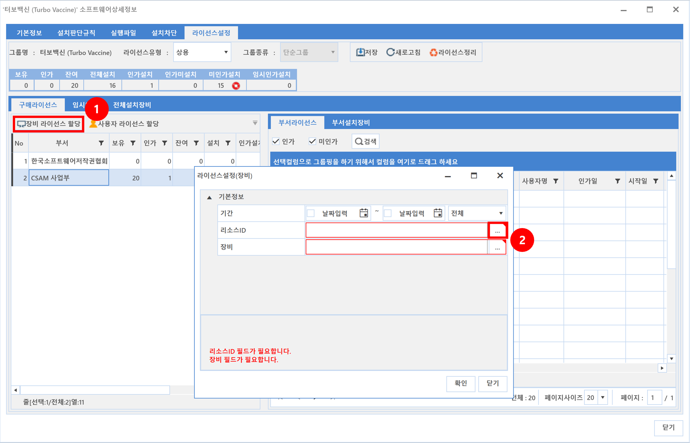
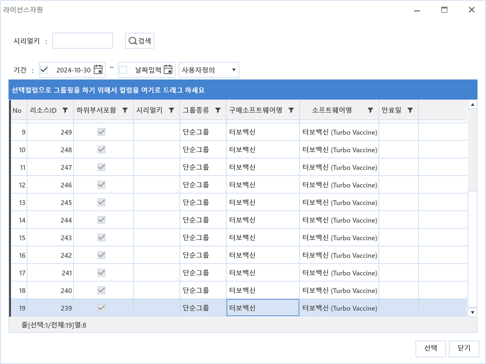
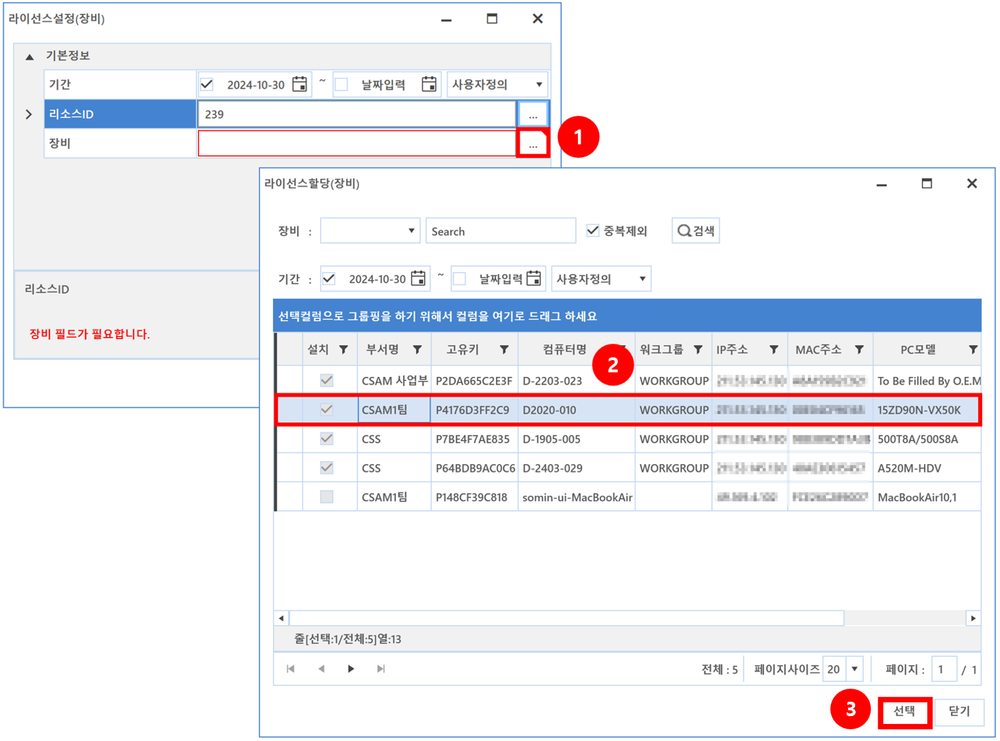
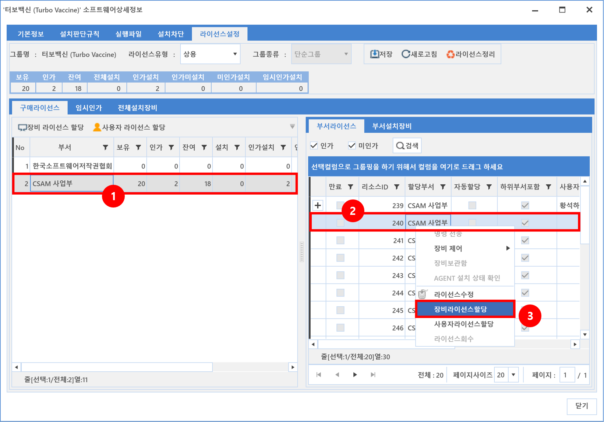
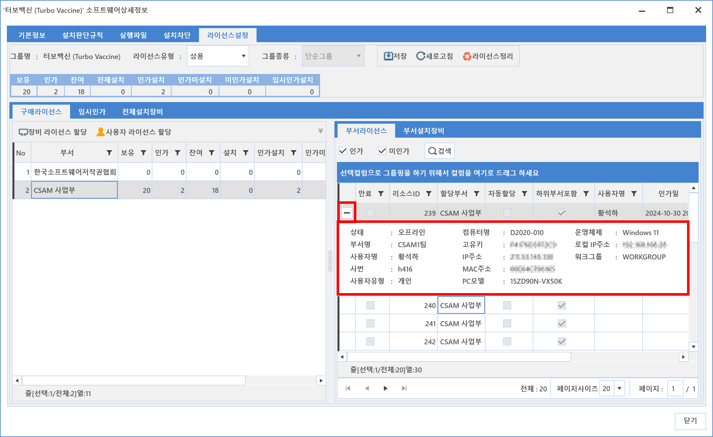

5-1-2-5-2. 장비 라이선스 할당
5-1-2-5-2. 장비 라이선스 할당
Source: https://www.sweeper.or.kr/etc/manual/51252.html
5-1-2-5-2. 장비 라이선스 할당
5. 소프트웨어 ›› 5-1. 자산관리 ›› 5-1-2. SWDB ›› 5-1-2-5. 라이선스 설정 ››


앞서 [자산관리-라이선스]에서도 장비 라이선스를 할당할 수 있었고, BOX의 상세정보에서도 장비별 라이선스 할당이 가능합니다.
장비 라이선스 할당 방법
- 장비 라이선스 할당

- 리소스ID 선택
할당 가능한 리소스ID 리스트가 보여지며, 원하는 리소스를 선택합니다.

- 장비 선택
선택가능한 장비 리스트가 보여지며, 사용할 장비를 선택합니다.

- 장비 라이선스 할당 확인
선택한 PC에 장비 라이선스가 할당되었음을 확인할 수 있습니다.

- 모든 라이선스 할당이 완료되면 전체적인 통계현황을 확인할 수 있습니다.

참고사항
- 장비 라이선스 할당은 리소스에서 우클릭 명령으로 할 수 있습니다.

- 장비에 라이선스를 할당하고, 해당 장비에 소프트웨어가 설치가 된 경우, 활성화 된 '+' 표시를 누르면 장비 상세정보를 확인할 수 있습니다.

- 부서설치장비에서 '장비 라이선스 일괄할당' 으로 한번에 여러 장비에 라이선스 할당을 할 수 있습니다.

© Copyright SWeeper Inc.. All Rights Reserved